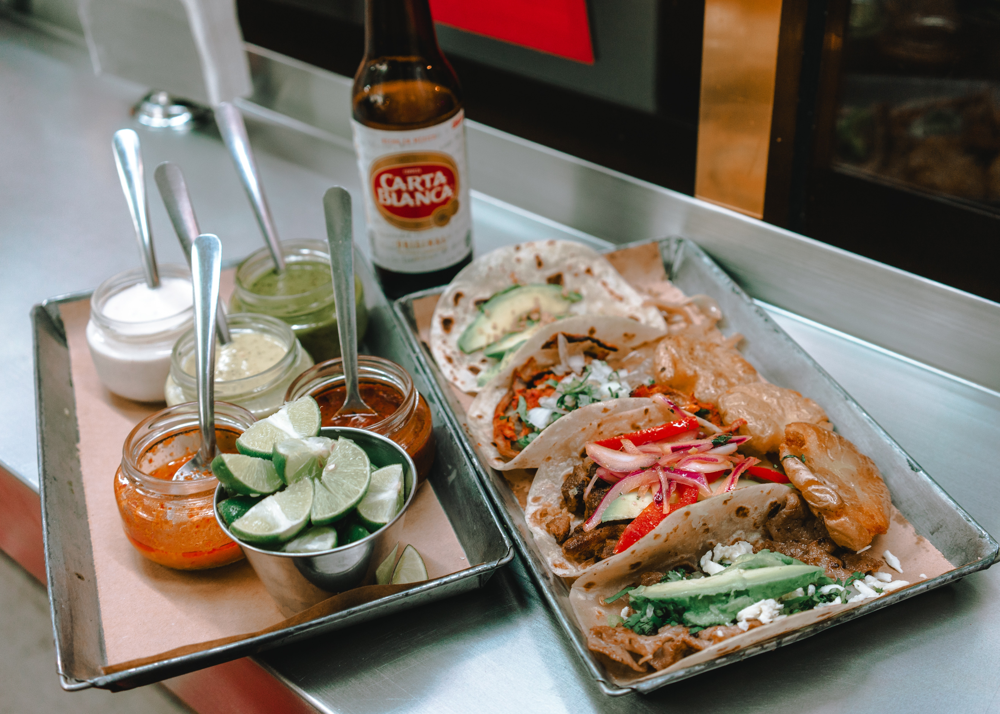

About Mexico
Mexico
is a country in the southern portion of North America. It is bordered to the
north by the United States; to the south and west by the Pacific Ocean; to the southeast
by Guatemala, Belize, and the Caribbean Sea; and to the east by the Gulf of Mexico.
Mexico covers 1,972,550 square kilometers (761,610 sq mi) and has approximately 128,649,565
inhabitants, making it the world's 13th-largest country by area, 10th-most-populous country,
and most populous Spanish-speaking nation. It is a federation comprising 31 states and Mexico City,
its capital city and largest metropolis. Other major urban areas include Guadalajara, Monterrey,
Puebla, Toluca, Tijuana, Ciudad Juárez, and León.
Learn more

Palacio de Bellas Artes
The Palacio de Bellas Artes
(Palace of Fine Arts) is a prominent cultural center
in Mexico City. It has hosted some of the most notable events in music, dance, theatre,
opera and literature and has held important exhibitions of painting, sculpture and
photography. Consequently, the Palacio de Bellas Artes has been called the "Cathedral
of Art in Mexico". The building is located on the western side of the historic center
of Mexico City next to the Alameda Central park.
Learn more
Monumento a la Revolución
The Monument to the Revolution (Spanish: Monumento a la Revolución) is
a landmark and monument commemorating the Mexican Revolution. It is located
in Plaza de la República, near to the heart of the major thoroughfares Paseo
de la Reforma and Avenida de los Insurgentes in downtown Mexico City.
Learn more

Mariachi
Mariachi is a genre of Regional Mexican music that dates back to at least the 18th century,
evolving over time in the countryside of various regions of western Mexico. The
usual mariachi group today consists of as many as eight violins, two trumpets and
at least one guitar, including a high-pitched vihuela and an acoustic bass guitar
called a guitarrón, and all players taking turns singing lead and doing backup vocals.
Learn more
Agave
Agave tequilana, commonly called blue agave (agave azul) or tequila agave,
is an agave plant that is an important economic product of Jalisco, Mexico, due
to its role as the base ingredient of tequila, a popular distilled beverage.
The high production of sugars named agavins, mostly fructose, in the core of the
plant is the main characteristic that makes it suitable for the preparation of alcoholic beverages.
Learn more

Museo Soumaya
The Museo Soumaya is a private museum in Mexico City and a non-profit cultural institution with two
museum buildings in Mexico City - Plaza Carso and Plaza Loreto. It has over 66,000 works from 30 centuries
of art including sculptures from Pre-Hispanic Mesoamerica, 19th- and 20th-century Mexican art and an extensive
repertoire of works by European old masters and masters of modern western art such as Auguste Rodin, Salvador Dalí,
Bartolomé Esteban Murillo and Tintoretto. It is called one of the most complete collections of its kind.
Learn more

Tacos
is a traditional Mexican dish consisting of a small hand-sized corn or wheat tortilla topped with a filling.
The tortilla is then folded around the filling and eaten by hand. A taco can be made with a variety of fillings,
including beef, pork, chicken, seafood, beans, vegetables, and cheese, allowing for great versatility and variety.
They are often garnished with various condiments, such as salsa, guacamole, or sour cream, and vegetables, such as
lettuce, onion, tomatoes, and chiles. Tacos are a common form of antojitos, or Mexican street food, which have spread
around the world.
Learn more